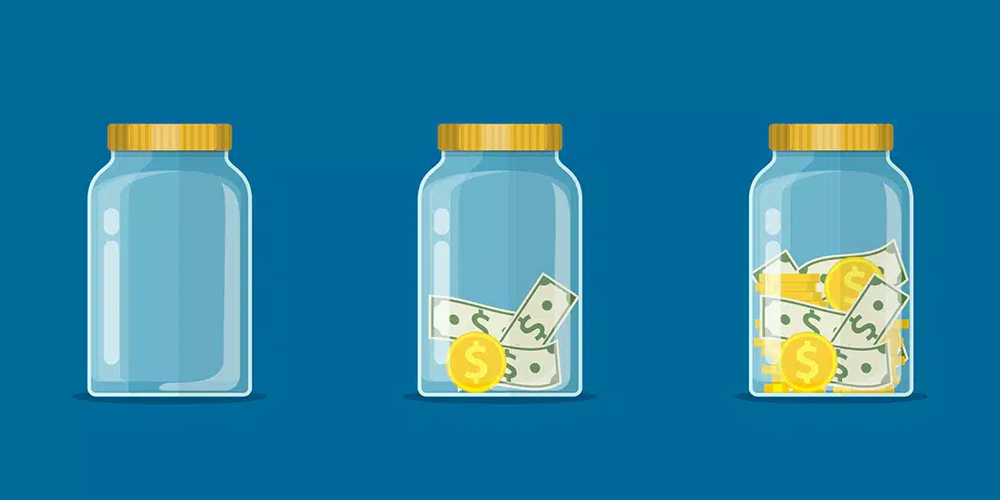

15.1. Bước quan trọng đầu tiên
Chào mọi người!
Đây là bài đầu tiên của series Dòng Tiền Khi Ngủ về đầu tư, quản lý tài chính cá nhân và tạo ra nguồn thu nhập thụ động – một yếu tố cực kỳ quan trọng để có thể đạt được sự tự do tài chính.
“Nếu không tìm cách kiếm được tiền ngay cả lúc đang ngủ, bạn sẽ phải làm việc cho tới khi chết”
Đó là câu nói rất nổi tiếng của Warren Buffett mà chắc có lẽ mọi người đã nghe qua. Bỏ qua việc tranh cãi nếu chỉ hiểu theo nghĩa đen và cho rằng làm việc không có gì xấu, con người không làm việc thì sẽ rất chán, và sống vô nghĩa.
Theo mình chúng ta nên hiểu theo ý nghĩa rằng việc có dòng tiền thụ động sẽ giúp bạn kiếm tiền được ngay cả khi đi chơi, khi nghỉ làm để không phải dùng thời gian để đổi lấy tiền nữa.
Hầu hết mọi người ai cũng muốn có dòng tiền thụ động, tiền đẻ ra tiền nhưng không nhiều người đạt được đến điều này bời vì nó cần nhiều thời gian, cần nhiều sự kiên trì hơn.
Và một trong những yếu tố cực kỳ quan trọng nhưng luôn bị xem thường đó là: TIẾT KIỆM
Tiết kiệm mình muốn nói ở đây việc bạn tiết kiệm chứ không phải ý nói là tiết kiệm gửi ngân hàng mọi người nhé.
Thế giới này có rất nhiều thứ ta không kiểm soát được. Trong cuộc sống thì đầy rẫy những rủi ro, tai nạn, mất mát, dù có cẩn thận đến mấy nhưng không ai chắc chắn nó có xảy đến với mình hay không. Trong đầu tư, không có gì chắc chắn một chiến lược đầu tư sẽ luôn luôn hiệu quả, một khoản đầu tư tốt cũng đột nhiên biến động đôi khi chỉ vì một lý do vớ vẩn chẳng ai ngờ đến. Kể cả dù mình vẫn nói rằng mình sẽ đầu tư theo khung W, M và tin rằng thị trường sẽ luôn tăng xét theo dài hạn, những cũng không thể biết thị trường sẽ sideways, downtrend trong bao lâu, cũng không thể lường trước được những sự kiện bất ngờ, những cây nến chọc xuống hay đâm lên lúc nào.
Tuy nhiên, có một thứ mà bản thân mỗi người chúng ta đều kiểm soát được về tài chính đó là các khoản tiết kiệm cá nhân và một lối sống thanh đạm, tối giản, và điều này 100% sẽ giúp bạn kiểm soát và mang lại những hiệu quả về tài chính ngay bây giờ, trong tương lai. 
Phương trình đơn giản về tích lũy của cải:
Của cải tích lũy = Thu nhập – Chi tiêu
Của cải là sự tích tụ của những thứ còn lại sau khi bạn đã tiêu thụ những thứ đầu vào.
Vì vậy chúng ta:
- luôn có thể tích lũy của cải mà không cần có nguồn thu nhập cao.
- có nguồn thu nhập cao nhưng cũng không có cơ hội tích lũy của cái nếu thiếu một tỉ trọng tiết kiệm cao trong sinh hoạt của mình.
Tuy nhiên giá trị của của cải cũng lại là tương đối với những gì bạn cần.
Giả sử mình đầu tư với lợi nhuận là 10% một năm, một người khác đầu tư với lợi nhuận là 15% một năm nhưng mình chỉ cần chi tiêu một nửa số tiền mà người này chi tiêu là mình có đủ sự hạnh phúc rồi trong khi lối sống của họ cũng gia tăng nhanh như số của cải họ có. Cuối cùng thì số của cải mình tích lũy được qua thời gian vẫn luôn lớn hơn dù cho thu nhập mình có ít hơn. Mình nhận được nhiều lợi ích từ việc đầu tư hơn người này dù mình đầu tư kém hơn.
Và trong phương trình mình viết ở trên sự thật là việc tiết kiệm mang lại hiệu quả cao hơn, quyền kiểm soát bạn nắm cũng tốt hơn so với phát triển mức lương vì không phải lúc nào cũng có thể gõ cửa phòng sếp để xin tăng lương được.
Đôi khi cố gắng phát triển mức lương một cách vội vàng lại khiến chúng ta gặp những rủi ro không đáng có về tiền bạc nếu mạo hiểm vay vốn, về sức khỏe nếu cứ cật lực làm thêm giờ thay vì việc tiết kiệm với rủi ro 0%. Nói như vậy không phải mình đang khuyên mọi người không cần tăng mức lương hay thu nhập mà chỉ cần sống như một thiền sư để tiết kiệm tiền. Mình chỉ muốn nhấn mạnh sự quan trọng của việc tiết kiệm để chúng ta hài hòa giữa 2 về tạo ra thu nhập và tăng tỉ trọng tiết kiệm cao hơn mà thôi. Sự thật là những lợi nhuận đầu tư lớn và những khoản tiền lương thưởng cao mang lại cho chúng ta những cảm giác rất tuyệt vời khi chúng ta đạt được nó. Những sự thật rằng thường dùng ta dùng quá nhiều nỗ lực đặt vào vế này của phương trình mà quên đi mất nỗ lực đặt vào vế còn lại.
Lợi nhuận của việc tiết kiệm
Việc tiết kiệm được tiền và có lối sống tiết kiệm hơn sẽ mang lại cho bạn rất nhiều lợi ích
Bảo vệ bạn khỏi những thứ không lường trước được Thế giới này luôn có những điều mà bạn không thể lường trước được chẳng hạn như đại dịch khiến cả thế giới quay cuồng mất mấy năm, chiến tranh, hay tự nhiên có máy bay đâm đổ tòa tháp đôi ngày 11/9 khiến khủng hoảng xảy ra, nhiều người mất việc. Việc có tiết kiệm sẽ như tấm hàng rào bảo vệ bạn khỏi những thứ không lường trước được.
Được kiểm soát quỹ thời gian của chính bạn Việc tiết kiệm trao cho bạn sự linh hoạt, khả năng chờ đợi cơ hội và nắm lấy. Nó sẽ trao cho bạn thời gian để suy nghĩ khi ra quyết định. Sự linh hoạt trong mọi việc khi việc có một khoản tiết kiệm có thể trao cho bạn những lựa chọn thay đổi nghề nghiệp, nghỉ hưu sớm, tự do không phải lo lắng gì cả. Và giá trị này với mình là rất lớn không thể định giá được. Ngoài ra, thực sự có muốn định giá cũng không được vì bạn có sự linh hoạt thì bạn có thể chờ đợi những cơ hội phù hợp đến tay bạn và nó không thể đong đếm theo cách tính lãi suất vài % ngân hàng thông thường được. Mình vẫn nhớ trước đấy khi mình có nói trên một video nào đó việc mình khi đó để % tiền mặt rất nhiều. Có một bạn nào đó comment rất gắt nói mình vậy mà cũng đi làm video về đầu tư, tiền mặt để thì luôn mất giá trị vì lạm phát các thứ. Thời điểm đó Crypto và CK đang tăng phi mã, chỉ là mình đang chờ cơ hội đến như đợt coin xuống vừa rồi. Đôi khi cờ đến tay rồi, chỉ là bạn có còn vốn để phất được hay không mà thôi.
Học cách hạnh phúc với ít tiền hơn
Nghe điều này thì rất đơn giản nhưng thực sự mình nghĩ có thể chúng ta đều cần học điều này. Và bản thân mình cũng luôn cần nhắc nhở để kéo bản thân trở lại với điều này mà không theo quán tính từ những người xung quanh. Vì chúng ta đang sống trong xã hội, người thân, bạn bè chứ không phải một thầy tu trong chùa. Đấy là với bản thân mình sẽ dễ dàng hơn những bạn, những anh chị đã có gia đình, con cái sẽ khó khăn gấp đôi, gấp 3. Vì để thay đổi thói quen và sống tiết kiệm hơn sẽ ảnh hưởng đến nhiều người hơn. Tuy nhiên, để có tương lai tài chính tốt đẹp hơn thì chúng ta cùng cố gắng dần dần mỗi ngày một chút. Ban đầu hãy tiết kiệm chi tiêu của chính bản thân chúng ta trước thay vì kỳ vọng người thân cũng phải làm theo. Thực ra khi học được cách hạnh phúc với ít tiền hơn, cuộc sống, tình cảm chúng ta cũng tốt đẹp hơn nhiều vì chúng ta đã ít phụ thuộc vào vật chất, hay bận tâm đến cái nhìn của những người xung quanh . Khi người thân thấy bạn hạnh phúc, yêu cuộc sống hơn họ cũng sẽ tự động chuyển biến.
Thực ra, đôi khi chúng ta tiêu tiền nhiều hơn phản ánh cách tiêu tiền để cho mọi người thấy rằng chúng ta có (hoặc đã từng có) tiền. Nếu gặp phải suy nghĩ theo cách này thì cách tốt nhất để chúng ta làm tăng khoản tiết kiệm của mình không phải là làm tăng nguồn thu nhập. Đó là làm tăng sự khiêm tốn của bản thân lên. Bản thân mình, mỗi khi mình nhận ra hình như mình đang chi tiêu khoản nào đó lãng phí, khi nghĩ lại đều là do trong suy nghĩ của mình muốn chứng tỏ với những người khác hơn là việc mang lại giá trị cho bản thân. Và mình sẽ tự điều chỉnh lại. Vì cuối cùng, điều mình cần làm là cảm giác tự bản thân thấy hạnh phúc, làm được những gì mình muốn, những điều ý nghĩa chứ không phải cố chứng tỏ với người khác khi thực sự mình đã làm và thấy nó không hạnh phúc hơn, và cũng không phải là bản thân mình.
Và một điều mình nhận ra ở xung quanh, xã hội, thế giới:
Những người có thành công tài chính cá nhân lâu bền ( không nhất thiết phải là người có thu nhập cao) là những người thường có xu hướng không quan tâm nhiều đến điều những người khác nghĩ về họ.
Vài tips nhỏ mình đã áp dụng có thể giúp bạn tiết kiệm hơn
Quản lý chi tiêu ghi lại các khoản thu chi hàng ngày.
Có rất nhiều các ứng dụng tiện lợi như Money Lover, Sổ thu chi MISA. Trước đây mình dùng Sổ thu chi MISA vì thiết kế của nó tiện dụng và đủ dùng với mình. Khi sử dụng app bạn sẽ thấy mình không tiêu ít như mình nghĩ, và sẽ hiểu không hiểu vì sao mình hết tiền, thấy các chi tiêu không cần thiết. App cũng giúp bạn chia ngân sách cho từng loại chi tiêu để biết mình còn bao nhiêu tiền để chi tiêu cho loại dịch vụ đó tháng này. Sau này, khi đã rèn cho mình thói quen chi tiêu tiết kiệm bạn có thể cũng không dùng nó nữa cũng được
Tìm hiểu về lối sống tối giản
Đây là lối sống mình áp dụng và đã thay đổi quan điểm của mình rất nhiều so với trước đây mà mình đã có chia sẻ qua các bài viết hay video Uống trà cùng Medio
Học cách tiết kiệm không vì mục đích gì.
Thay vì phải cần lý do như tiết kiệm để mua xe mới, mua thứ này thứ kia. Chúng ta học cách để tiết kiệm mà không vì mục tiêu để mua hay làm một thứ gì đó. Đó chỉ như là một thói quen mà thôi.
Nếu còn nợ tiêu dùng, tín dụng, trả góp hãy cố gắng trả hết. Và nói không với các khoản vay.
Mua sắm chủ động thay vì bị động. Tức là chỉ mua 1 món đồ khi mình thấy cần thay vì thấy nó giảm giá, vì sale, vì quảng cáo.
Hạn chế hoặc không dùng MXH, xem livestream bán hàng để tránh các quảng cáo đập vào mắt mình.
Mạng xã hội rất hiểu bạn và phân phối quảng cáo nên việc nhìn thấy hàng ngày sẽ khiến não bạn tự thuyết phục là mình có nhu cầu. Ngoài ra, còn là việc thấy người khác có cái này có cái kia khiến nảy sinh những ham muốn không cần thiết. Như đợt trước mình có nói là đợt Covid mình dùng lại Facebook, vì nghĩ mình unfollow, bỏ theo dõi những thứ tiêu cực, cũng nghĩ mình đủ tịnh tâm rồi mà cuối cùng vẫn chưa làm được nên giờ mình cũng gần như không dùng nữa.
Ai cũng nghe đến câu chuyện hạt gạo và sức mạnh khủng khiếp của lãi kép. Nhưng lãi kép sẽ không xảy ra nếu có một con chuột ăn hết những hạt gạo hàng ngày.